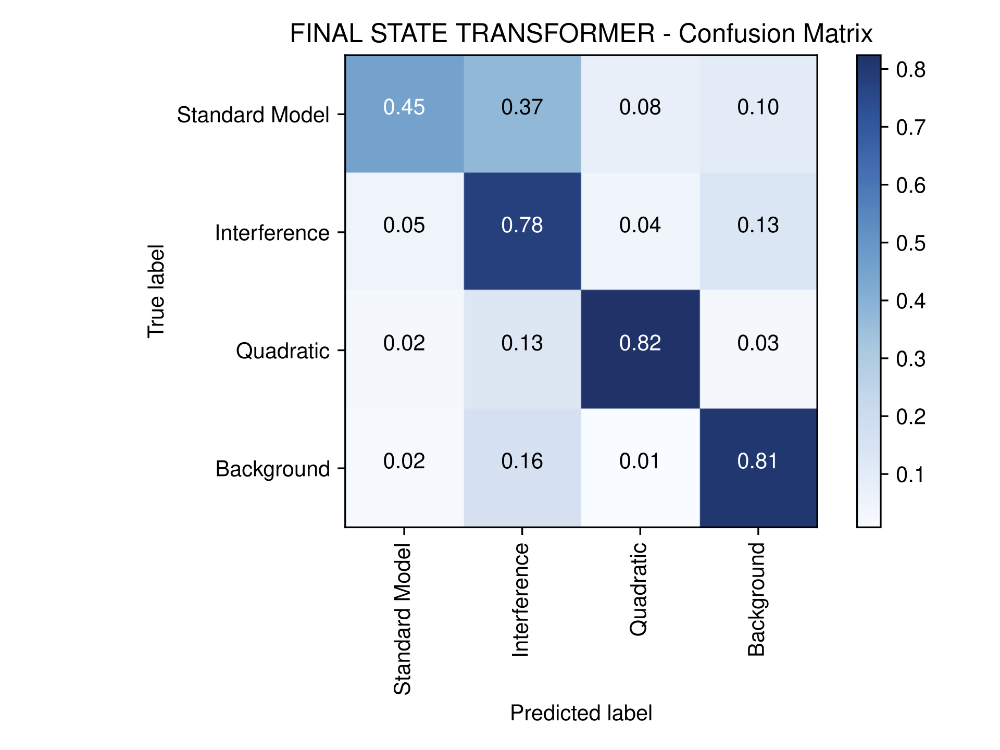
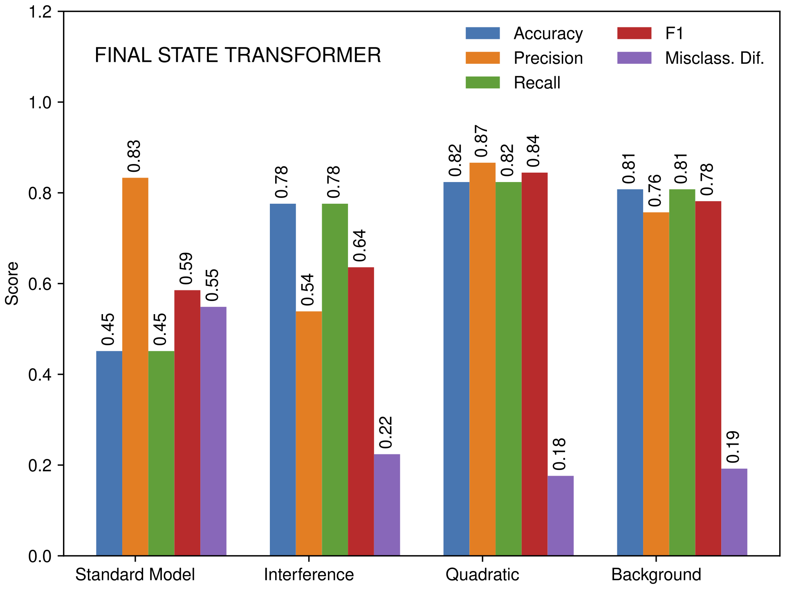
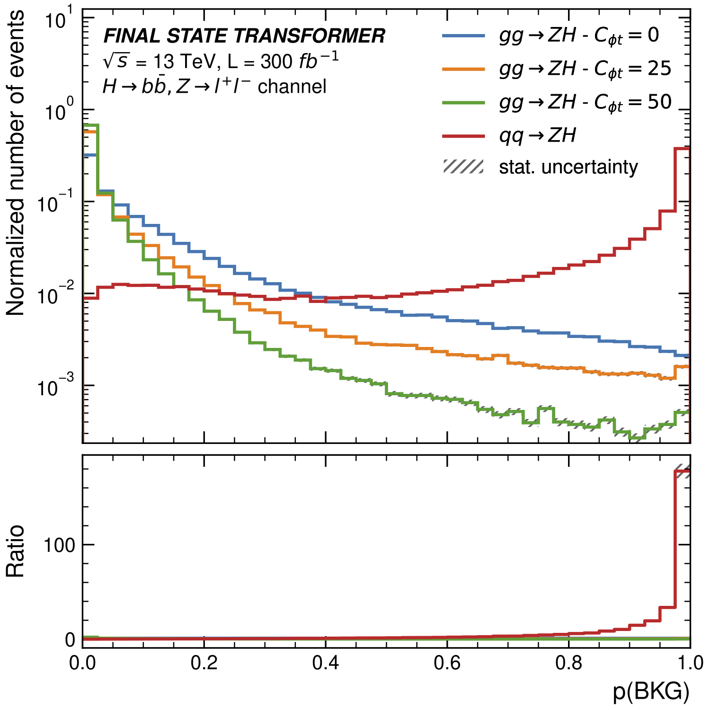
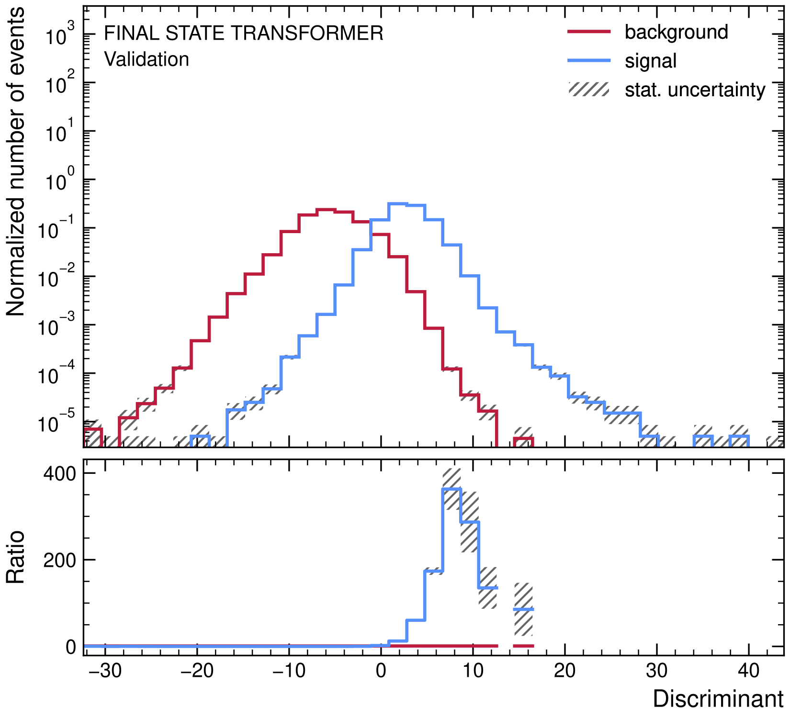
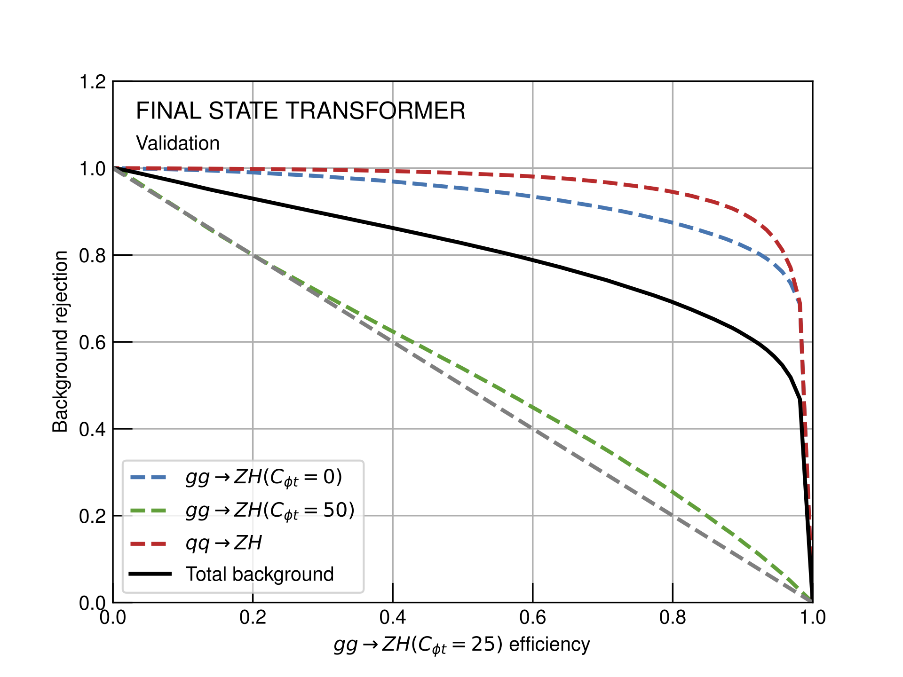

Performance Assessment
The validation scripts load the trained model, performs predictions on validation datasets, and conducts various validation tasks based on user-defined options. These tasks include saving predictions, plotting model architecture, computing and visualizing confusion matrices, generating ROC curves, plotting efficiency curves, and displaying probability distributions. The script is adaptable to both classification and regression scenarios, offering different visualization and evaluation methods based on the selected training mode. The command-line interface allows users to specify the configuration file path when executing the script, contributing to ease of use and configurability. Overall, the script provides a comprehensive set of validation tools for assessing the performance of a Transformer model on new data.
Confusion Matrix
A confusion matrix is a key performance measurement tool which allows you to visualise, in a tabular format, the performance of a classifier by comparing predicted classes against true classes. It helps identifying which classes are being confused with each other, giving insights into areas where your model may need improvements.
Beyond the various metrics which can be calculated, such as accuracy, precision, recall, specificity or F1 score, the examination of its cells can provide insights into the types of errors made by the model. For example, a high number of false positives may indicate that the model is overly sensitive and is incorrectly predicting positive outcomes too often. On the other hand, a high number of false negatives may suggest that the model is missing important patterns or features in the data.

Training Performance Scores
Several scores are computed and plotted, in order to evaluate the performance of classification models.
Accuracy: Accuracy is a measure of the overall correctness of a model. It is calculated as the ratio of correctly predicted instances to the total instances in the dataset:
\(A = \frac{\text{Number of Correct Predictions}}{\text{Total Number of Predictions}}.\)
Precision: Precision is the measure of the correctness of positive predictions made by the model. It is the ratio of true positive predictions to the total predicted positive instances:
\(P = \frac{\text{True Positives}}{\text{True Positives} + \text{False Positives}}.\)
Recall (Sensitivity): Recall, also known as Sensitivity, is the measure of the model's ability to correctly identify positive instances out of all actual positive instances. It is calculated as the ratio of true positive predictions to the total actual positive instances:
\(R = \frac{\text{True Positives}}{\text{True Positives} + \text{False Negatives}}.\)
F1 Score: The F1 score is the harmonic mean of precision and recall. It provides a balance between precision and recall:
\(F1 = 2 \times \frac{\text{Precision} \times \text{Recall}}{\text{Precision} + \text{Recall}}.\)
Misclassification Difficulty: Misclassification difficulty refers to the complexity or degree of difficulty in accurately classifying instances in a dataset. It is subjective and can vary depending on factors such as class imbalance, overlap between classes, and the quality of features used for classification. Higher misclassification difficulty implies that it is more challenging for a model to correctly classify instances.

Output Class Probabilities
The output probability class of classification models refers to the probability assigned by the model to each class for a given input instance. In classification tasks, especially in scenarios with more than two classes (multi-class classification), the model predicts the probability distribution over all possible classes. Each class is assigned a probability score indicating the likelihood of the input instance belonging to that class. The class with the highest probability is typically chosen as the predicted class for the input instance. However, you can adjust the threshold depending on your requirements. Output probability classes are useful not only for making predictions but also for assessing the model's confidence in its predictions. Higher probabilities generally indicate higher confidence in the prediction, while lower probabilities suggest more uncertainty.

LLR Discriminant
The LLR (Log-Likelihood Ratio) ratio discriminant is a statistical measure used in binary classification tasks, particularly in signal detection scenarios, to distinguish between a signal and background noise. It is based on comparing the likelihoods of an observation under the signal hypothesis versus the background hypothesis. The LLR ratio discriminant represents the logarithm of the likelihood ratio of the signal probability to the sum of background probabilities for a given input instance. In signal detection problems, the model assigns probabilities to both the signal and background classes. The LLR ratio discriminant is calculated using these probabilities and is given by:
\(D = \ln (\frac{\text{Signal Probability}}{\text{Sum of Background Probabilities}})\)
A positive LLR ratio discriminant suggests that the observation is more likely to belong to the signal class, while a negative value indicates a higher likelihood of belonging to the background class. The magnitude of the LLR ratio discriminant indicates the strength of evidence for one class over the other. For example, if the LLR ratio discriminant for an observation is 2.5, it means that the observation is 10^(2.5) times more likely to belong to the signal class compared to the background class. The LLR ratio discriminant is particularly useful in scenarios where there is a need to distinguish a weak signal from background noise with high confidence.

ROC Curves
Receiver Operating Characteristic (ROC) curves are indispensable tools for assessing the performance of classification models, especially in scenarios where background rejection is a crucial consideration relative to signal efficiency. On the deficated validation plots, the top-right corner of the ROC space represents the optimal performance, where the model achieves high signal efficiency while maintaining high background rejection. The Area Under the ROC Curve (AUC-ROC) quantifies the overall performance of the model, with higher values indicating superior discrimination between signal and background. ROC analysis facilitates the comparison of different models' performances, helping in the selection and optimization of the model.
